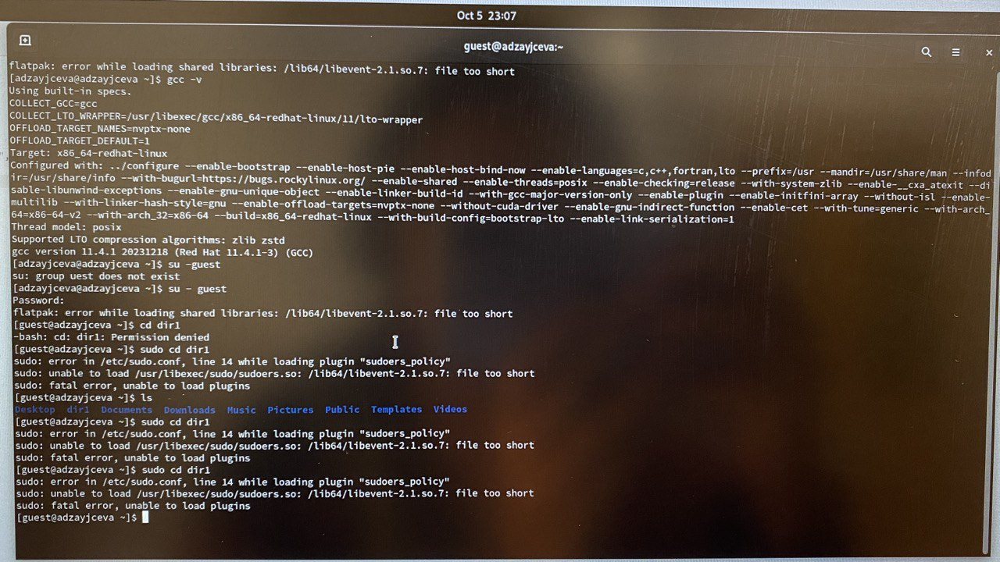
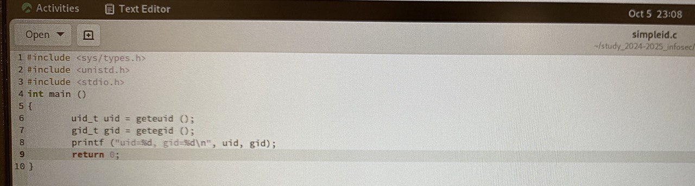

Front matter
lang: ru-RU
title: Laboratory №5
author: |
Anna D. Zaytseva\inst{1,3}
institute: |
\inst{1}RUDN University, Moscow, Russian Federation
date: NEC--2024, 5 October, Moscow
toc: false
slide_level: 2
theme: metropolis
header-includes:
- \metroset{progressbar=frametitle,sectionpage=progressbar,numbering=fraction}
- '\makeatletter'
- '\beamer@ignorenonframefalse'
- '\makeatother'
aspectratio: 43
section-titles: true
Цель работы
Цель работы --- Изучение механизмов изменения идентификаторов, применения SetUID- и Sticky-битов. Получение практических навыков работы в консоли с дополнительными атрибутами. Рассмотрение работы механизма смены идентификатора процессов пользователей, а также влияние бита Sticky на запись и удаление файлов.
Задание
- Последовательно выполнить все пункты (указанные в файле с заданием к лабораторной работе №5), занося ответы на поставленные вопросы и замечания в отчёт.
Выполнение лабораторной работы
Steps 1-5
Работа с программой simpleid.c
{ #fig:001 width=70% }
{ #fig:002 width=70% }
Steps 6-11
Работа с программой simpleid2.c
Steps 12-19
Работа с программой readfile.c
Исследование Sticky-бита
Step 20
Сохранила отчёт в 3 форматах: docx, pdf, md. Обновила данные на GitHub.
Вывод
Я получила практические навыкы работы в консоли с дополнительными атрибутами.
Библиография
- Медведовский И.Д., Семьянов П.В., Платонов В.В. Атака через Internet. — НПО "Мир и семья-95", 1997. — URL: http://bugtraq.ru/library/books/attack1/index.html
- Медведовский И.Д., Семьянов П.В., Леонов Д.Г. Атака на Internet. — Издательство ДМК, 1999. — URL: http://bugtraq.ru/library/books/attack/index.html
- Запечников С. В. и др. Информационн~пасность открытых систем. Том 1. — М.: Горячаая линия -Телеком, 2006.
{.standout}
Спасибо за внимание!